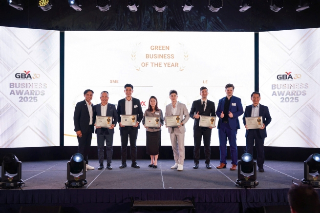
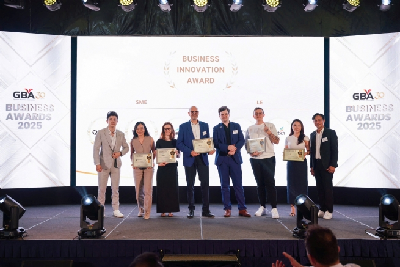
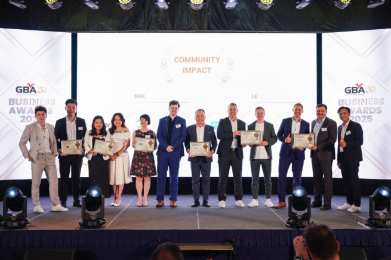

GBA Business Awards 2025: Honoring Excellence, Spreading Sustainable Values
September 19, 2025, The German Business Association in Vietnam (GBA) successfully hosted the GBA Business Awards 2025, a prestigious event celebrating pioneering enterprises with outstanding contributions to innovation, sustainability, and community responsibility. This year’s program carried even greater significance as it coincided with GBA’s 30th anniversary, reaffirming the Association’s solid position as a vital bridge between the German and Vietnamese business communities.

The ceremony was honored by the presence of Ms. Andrea Maria Sühl, Consul General of Germany in Ho Chi Minh City, along with numerous business leaders, partners, and long-standing members who have accompanied GBA throughout the past three decades. On this special occasion, GBA presented commemorative medals in recognition of enduring contributions that have shaped memorable milestones in its collective journey of growth.
In its second edition, the GBA Business Awards 2025 attracted more than thirty nominations from both large corporations and small and medium-sized enterprises (SMEs). Notably, for the first time, SMEs had the opportunity to participate fully in all three award categories, highlighting the growing significance of this business sector in shaping a dynamic, innovative, and sustainable business environment in Vietnam. A fresh and exciting feature of this year’s awards was live voting, allowing attendees to directly select the winning companies. This innovation enhanced transparency, fostered lively interaction, and strengthened community bonds.
The businesses honored this year will go on to represent the German business community in Vietnam at the EuroCham Business Awards 2025. This provides a broader platform to showcase the image and values of German enterprises within the European business community, while reaffirming GBA’s stature and influence on the international stage.
Speaking at the ceremony, Mr. Alexander Ziehe, Chairman of GBA, emphasized that the awards are not only about celebrating achievements but also a testament to the spirit of innovation, adaptability, and the ambition to create positive impact demonstrated by German businesses in Vietnam, even amidst global economic uncertainty. Ms. Andrea Maria Sühl, Consul General of Germany in Vietnam, also affirmed that the accomplishments recognized today clearly reflect Germany’s long-term commitment as a strategic partner of Vietnam. According to her, German companies are not only making sustained investments, creating high-quality jobs, and providing training to international standards, but are also accompanying Vietnam on its path toward becoming a high-income country, with core values rooted in innovation, sustainability, and responsible business.

This year’s awards recognized Cicor Vietnam as SME Green Business of the Year for its comprehensive ESG strategy, smart energy management initiatives, and commitment to reducing over 400 tons of CO₂ emissions annually. Among large enterprises, Digi-Texx Vietnam was honored for its innovative efforts in promoting sustainable transportation and its practical contributions toward Vietnam’s 2050 net-zero target. In the Innovation category, Logivan – FreightPilot AI stood out with its AI-powered logistics solution that enhances cross-border transport efficiency; while Bosch Home Appliances Vietnam was recognized for pioneering the application of AI and automation in the kitchen, setting a new benchmark for smart living experiences. In the Business for Community category, Cicor Vietnam reaffirmed its long-term commitment to education and society through initiatives supporting students, offering scholarships, and fostering employee volunteerism; meanwhile, Bosch Vietnam was honored for its comprehensive CSR programs spanning education, healthcare, environment, and social welfare, with practical initiatives such as “Run for Education,” “Reunion Bus,” and “Floating House.”
Mr. Vi Thanh Tuấn, GBA Board Member and Head of the Awards Committee, highlighted that giving SMEs the opportunity to compete on equal terms with large corporations marks an important step forward, reflecting the maturity and growing strength of SMEs within the German business community in Vietnam. According to him, this also demonstrates the harmonious connection between the core values of German enterprises and the dynamic entrepreneurial spirit of Vietnam, opening new opportunities for cooperation and sustainable growth in the future.
This year’s ceremony was proudly hosted by Lotte Hotel Saigon and supported by in-kind sponsors Beefeater London Dry Gin, Pernod Ricard, and Vier Fine Wines, all of which contributed to the event’s resounding success.
It can be affirmed that the GBA Business Awards have become a significant milestone in the business community, not only honoring excellence but also serving as a platform to spread values and positive impact from the German business community in Vietnam, moving toward a prosperous and sustainable future.